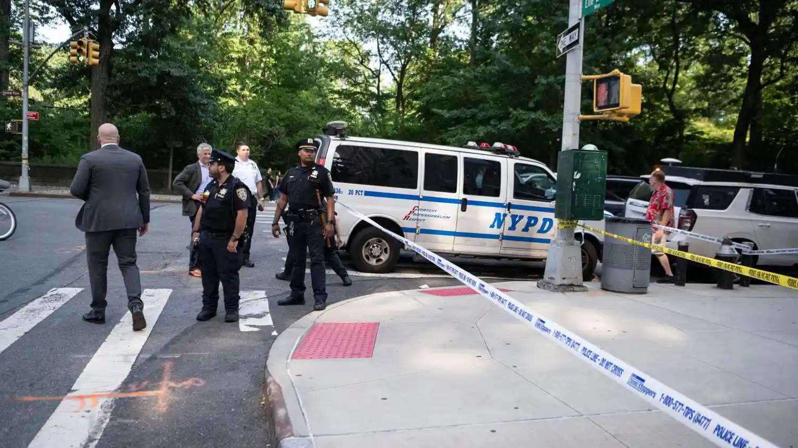

Breaking News
 July 24
July 24
by Morgan Blake
A man has been arrested after two separate stabbings near Central Park on Manhattan’s Upper West Side. The NYPD is investigating the attacks as possible hate crimes while examining motive
Two people were stabbed in separate incidents on Manhattan’s Upper West Side and police are investigating whether they were hate crimes, New York City police said. The incidents happened within minutes of each other Thursday afternoon, injuring two men, and prompting a major NYPD investigation into whether the attacks were bias-motivated. Authorities say 51-year-old Raul Morales was arrested on suspicion of stabbing two men in separate attacks. Investigators have not yet determined a final motive but are checking the victims’ identities to see if they were targeted. The suspect had no known connection to either victim, authorities said. The first attack was near West 84th Street and Central Park West, where a 57-year-old Asian man was reportedly stabbed. Another attack happened not far away near West 86th Street and Amsterdam Avenue, where a 50-year-old Jewish man was assaulted. Both victims were transported to a hospital and were expected to survive. Witnesses told police the suspect allegedly yelled a religious phrase during the attacks, police reports said. Those statements are part of the hate crime investigation, and investigators are also looking into whether other factors, including possible mental health issues, influenced the violence. Residents of the Upper West Side, a neighborhood with bustling streets, residential buildings, cultural institutions and close proximity to one of New York City’s most recognizable landmarks, were stunned by the attacks. The incidents occurred in the afternoon in a very populated area and raised alarms among residents and city officials.
Police immediately began searching for the suspect after the attacks. Authorities say Morales fled after the stabbings and then barricaded himself inside an apartment building in the area. Officers were eventually able to arrest him with the help of information passed on by a member of the public. Investigators believe Morales acted alone and there’s no indication of any additional suspects in the attacks, New York Police Department Commissioner Jessica Tisch said. Police recovered weapons suspected to have been used in the attacks, including a knife and some other sharp object. The NYPD’s Hate Crime Task Force is helping with the investigation as detectives try to figure out if the attacks meet the legal definition of hate crimes under New York law. Authorities said that investigating a possible hate crime involved looking at evidence about intent, statements made during an incident and the circumstances surrounding the attacks. Police officials said the motive remains a big part of the investigation. While comments made during the attacks have raised concerns about possible bias, investigators are still gathering evidence before reaching conclusions. The investigation is also looking into the background of the suspect. Officials said the investigation was still in its early stages, but early indications were that mental health issues may have played a role.
New York political figures condemned the attacks, calling the violence unacceptable and expressing solidarity with the victims and communities affected. New York City officials stressed that acts of violence against people based on their identity or background have no place in the city. New York Governor Kathy Hochul and New York City Mayor Zohran Mamdani each responded to the incident, stressing the importance of protecting Jewish and Asian communities while investigators work to determine the full context of the attacks. The inquiry comes amid wider concerns over hate-related incidents in New York City. The NYPD continues to investigate reports of bias incidents citywide. Officials say that hate crime investigations require extensive review because not every reported incident meets the legal threshold to be prosecuted as a hate crime. Community leaders have urged people to remain vigilant and warned against jumping to conclusions before investigators finish their work. They have encouraged residents to report suspicious activity and to support the victims of targeted violence. The incident also has reignited debate over public safety in Manhattan neighborhoods where residents and visitors regularly move through crowded streets, parks and commercial areas. And although New York officials have pointed to improvements in some categories of crime, isolated violent incidents continue to keep residents on edge
Police continue to investigate and as detectives gather more evidence and determine the sequence of events and the suspect’s intent. Final charges related to hate crime enhancements have not been announced as those decisions are dependent on the outcome of the investigation. The case underscores the challenges law enforcement faces in investigating attacks that could be motivated by individual behavior and potential bias. Officials must determine whether statements or actions made during an incident constitute a provable hate crime or whether other factors contributed to the violence. Both victims were said to be recovering after the attacks, some relief after a scary incident that played out in one of Manhattan’s busiest areas. Police officials said prompt action by witnesses and officers prevented additional injury. The Upper West Siders were alarmed by the randomness of the attacks, particularly because the victims seemed to have been chosen at random, with no apparent connection to the suspect. The investigation has underscored the need for public awareness and quick reporting if violent incidents occur. Detectives are continuing to review evidence and have asked the public to refrain from speculation and to allow them to do their job in determining the full circumstances. The NYPD and its hate crime investigators are still actively reviewing the case and authorities are working to determine a motive for the attacks and whether they were bias-motivated.

Morgan Blake is a U.S. investigative journalist specializing in government accountability, corporate misconduct, and public-interest reporting.